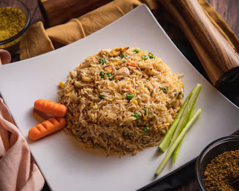

Nigerian Fried Rice

Description
Nigerian fried rice is a colorful and flavorful rice dish made with cooked rice, mixed vegetables, spices, and stock. It is a popular dish at parties, celebrations, and family gatherings across Nigeria.
Ingredients
- 3 cups of rice
- 2 carrots, diced
- Green peas
- Sweet corn
- Green beans
- Red and green bell peppers
- Onions
- Vegetable oil
- Chicken stock
- Curry powder and thhyme
- Salt and seasoning cubes
Steps
- Wash the rice thoroughly and cook until almost tender.
- Wash and chop the carrots, green beans, bell peppers, and onions.
- Heat vegetable oil in a large frying pan.
- Add the onions and vegetables, then stir-fry for a few minutes.
- Add curry powder, thyme, salt, and seasoning cubes.
- Add the partially cooked rice and some chicken stock.
- Stir everything together and cook until the rice is tender.
- Serve hot with chicken, beef, or your preferred protein.
Home